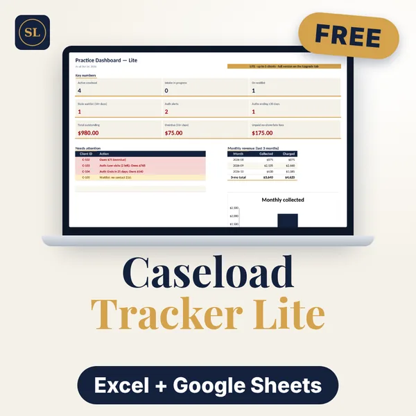
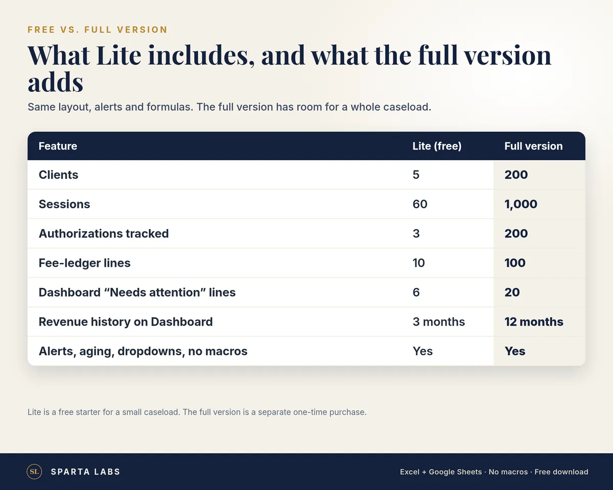
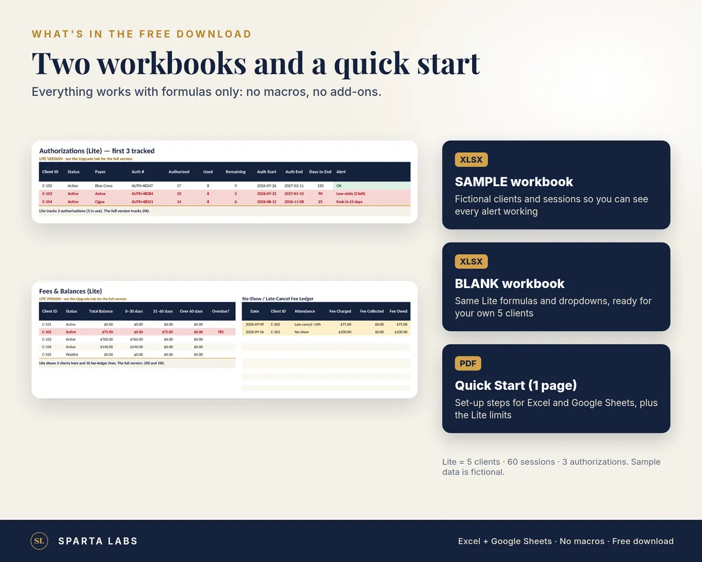

Therapist Caseload Tracker Lite
A free starter spreadsheet for solo therapists: track 5 clients, 60 sessions and 3 insurance authorizations in Excel or Google Sheets.
Delivery: instant digital download after purchase. No physical product is shipped.
Try the Therapist Caseload & Authorization Ledger layout for free.
Therapist Caseload Tracker Lite is a smaller, free version of our full caseload workbook. It tracks the logistics your EHR buries: who is active, whose insurance authorization is running low or about to end, who owes money, and which waitlist clients haven't been contacted. It uses client ID codes only, with no names and no clinical notes.
What you can do in Lite
- Track up to 5 clients on a Clients tab (status, payer, authorization, last contact)
- Log up to 60 sessions with CPT code, charged and paid amounts, and attendance (attended, late cancel, no-show)
- Track 3 insurance authorizations with visits used, visits remaining and low-visit / ending-soon alerts
- See balances by client with 0–30, 31–60 and 60+ day aging, plus a 10-line no-show and late-cancel fee ledger
- Check a Dashboard with key numbers, a 6-line "needs attention" list and 3 months of revenue
- Works in Excel, Google Sheets and LibreOffice. Formulas only, no macros or add-ons.
Lite is meant for a very small caseload, a trial, or seeing whether the layout fits how you work. The full version has room for 200 clients and more history, and uses the same column layout so you can copy your rows across. See the full Therapist Caseload & Insurance Authorization Tracker.
What's in the download
- Therapist-Caseload-Tracker-Lite-SAMPLE.xlsx (fictional demo data so you can see every alert)
- Therapist-Caseload-Tracker-Lite-BLANK.xlsx (empty, ready for your own 5 clients)
- Quick-Start-Guide.pdf (one page)
Lite vs full version
| Lite (free) | Full version | |
|---|---|---|
| Clients | 5 | 200 |
| Sessions logged | 60 | 1,000 |
| Insurance authorizations tracked | 3 | 200 |
| No-show / late-cancel fee ledger lines | 10 | 100 |
| Dashboard "Needs attention" lines | 6 | 20 |
| Dashboard revenue history | 3 months | 12 months |
| Alerts, balance aging, dropdowns, sheet protection, no macros | Yes | Yes |
| Files | SAMPLE + BLANK + 1-page Quick Start | SAMPLE + BLANK + Setup Guide & FAQ PDF |
This is an organizational tool, not an EHR, billing service, or HIPAA compliance solution, and it is not legal or billing advice. All sample data is fictional.
Digital download. Nothing physical ships. One license per buyer; for use in your own practice.

